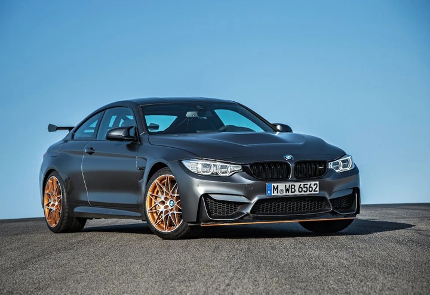

La BMW (sigla di Bayerische Motoren Werke, traducibile in italiano come "fabbrica bavarese di motori") è un'azienda tedesca conosciuta come la Casa dell’Elica produttrice di autoveicoli e motoveicoli e precedentemente motori aeronautici con sede a Monaco di Baviera. Fondata ufficialmente nel 1917 inizialmente per produrre motori d'aereo, ha esteso progressivamente la sua attività fino a diventare una delle case automobilistiche più importanti e prestigiose del mondo, rinomata per la grande qualità costruttiva e la modernità tecnologica e ingegneristica dei suoi prodotti. Nel 2017, il gruppo BMW ha venduto a livello mondiale 2505741 automobili (marchi BMW, Mini e Rolls-Royce) e 185682 motoveicoli a due ruote (marchio BMW)
